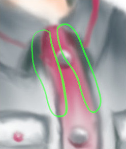
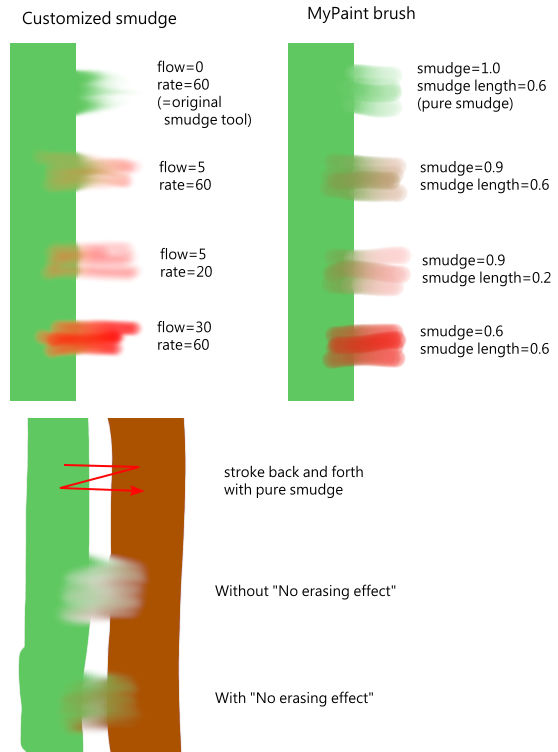

A ferramenta Dedinho lembra a pintura com os dedos. Com o GIMP-2.10, ela funciona de duas maneiras:
-
A ferramenta de borrar usa o pincel ativo para borrar as cores na camada ativa ou seleção. Ela pega as cores por onde passa e as usa para misturar a cores próximas, numa distancia que você pode determinar.
-
Quando a opção Fluxo for maior que 0,00, a ferramenta Dedinho funciona como um pincel usando a cor de primeiro plano da caixa de ferramentas e misturando com a cor subjacente.
Existem várias formas para ativar a ferramenta:
-
A partir do menu da janela de imagem: → → .
-
Ícone da ferramenta de clonagem na caixa de ferramentas
-
Ao pressionar o atalho de teclado C.
- Shift
-
A tecla Shift coloca a ferramenta de borrar no modo de linha reta. Pressionar a tecla Shift enquanto clica no faz com que o borrão seja feito em linha reta. Clicar consecutivamente fará com que continue a borrar em linhas retas a partir do fim da linha anterior.
- Ctrl
-
Pressionar Ctrl com o Shift, faz com que o ângulo entre duas linhas sucessivas variem em etapas de 15°.


Normally, tool options are displayed in a window attached under the Toolbox as soon as you activate a tool. If they are not, you can access them from the main menu through → → which opens the option window of the selected tool. The available tool options can also be accessed by double clicking the corresponding tool icon in the Toolbox.
- Opacidade, Pincel, Tamanho, Proporção, Ângulo, Espaçamento, Dureza, Força, Dinâmicas, Opções de dinâmicas, Aplicar espalhamento, Pincelada suave, O tamanho do pincel - curva de esmaecimento, Expand Layers
- Veja Opções em comum das ferramentas de pintura para uma descrição das opções da ferramenta que são aplicáveis a todas as ferramentas de pintura.
- Borda dura
-
Pressão: Pressione com mais força para tornar o pincel maior.
- Sem efeito de apagamento
-
Se a dedação diminuir o alfa de alguns pixels; este alfa não diminui se esta opção estiver marcada, e os pixels não são apagados. Isso é útil para preencher uma lacuna entre duas áreas de cor.
Figura 14.84. Um exemplo de "Sem apagamento" do programador

Sem efeito de apagamento

Sem efeito de apagamento
- Usar amostra combinada
-
Se você ativar essa opção, a recuperação não é calculada apenas a partir de valores da camada ativa, mas de todas as camadas visíveis.
O reticulado é completamente explicado no Glossário
- Taxa
-
Esta opção poderia ser chamada de "Comprimento do Dedinho" pois define o comprimento do efeito de dedinho em um traço.
- Fluxo
-
Já vimos o comportamento diferente da opção “Fluxo” quando definida como 0,00 (funciona como a ferramenta Dedinho original) e definida como mais que 0,00 (usa a cor de primeiro plano para dedar).
“Sem efeito de apagamento” e “Fluxo” são novas opções no GIMP-2.10. Aqui estão comentários e exemplos do programador dessas opções em gimp-forum.net:
